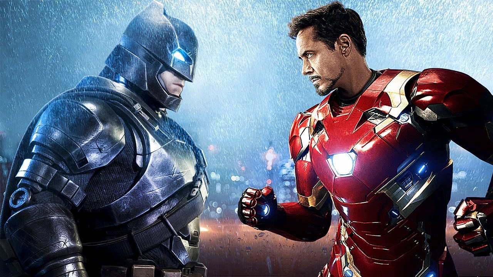
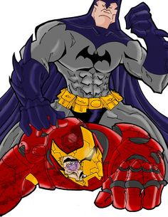

<<<<<<< Updated upstream
# Midterm
## Usage
TODO: Write usage instructions
## Contributing
Loui Hernandez
1. Fork it!
2. Create your feature branch: `git checkout -b my-new-feature`
3. Commit your changes: `git commit -am 'Add some feature'`
4. Push to the branch: `git push origin my-new-feature`
5. Submit a pull request :D
## Credits
Loui Hernandez
## License
MIT
=======
Batman VS Ironman
Batman VS Ironman

Best Superhero
The Debate:
Yes, it's true that Iron Man's suits (all except the older ones) are immune to EMP or any kind of electromagnetic interference.
It's no news that Batman can make armoured suits too. He's been doing this for a while. And now, it's even on the big screen (Batman v Superman: Dawn of Justice Trailer).
However, it's also true that the efficiency and scale of Iron Man's suits is much better. Batman still doesn't have anything matching Iron Man's arc reactor technology.
The Verdict
If it’s a straight-up fight you’re looking for, my money is on Iron Man, prep or no prep. But if it’s an all-out battle with no holds barred, Iron Man won’t won’t know what hit him. Literally.

>>>>>>> Stashed changes